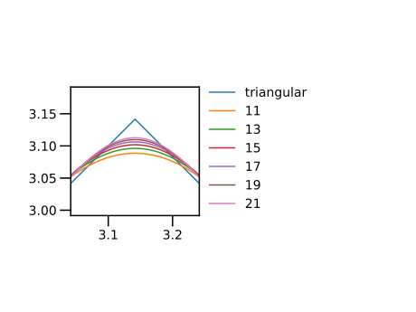

第8回： ▼ 総和・数値積分
▼ 級数和の公式（繰り返しで加算)
自然数の級数和の結果がいくつか知られている． これらのグラフを描いて，結果を確認しよう．
\[\sum_{k=1}^{n} k = 1 + 2 + \cdots + k + \cdots + n = \dfrac{n(n+1)}{2}\]
using PyPlot
nmax = 25
xs1 = 0:0.2:nmax
plt.plot(xs1, xs1 .* (xs1 .+ 1) / 2, label = "sum i", "b")
ns = 0:nmax
for n in ns
s1 = 0.0
for i = 1:n
s1 += i
end
plt.plot(n, s1, "bo")
end
plt.xlabel("n")
plt.ylabel("sum i up to n")\[\sum_{k=1}^{n} k^2 = 1^2 + 2^2 + \cdots + k^2 + \cdots + n^2 = \dfrac{n(n+1)(2n+1)}{6}\]
using PyPlot
nmax = 25
xs1 = 0:0.2:nmax
plt.plot(xs1, xs1 .* (xs1 .+ 1) .* (2 * xs1 .+ 1) / 6, "b")
ns = 0:nmax
for n in ns
s = 0.0
for i = 1:n
s += i^2
end
plt.plot(n, s, "bo")
end
plt.xlabel("n")
plt.ylabel("sum i^2 up to n")■ ベクトルのインデックス
参考 → ■ ベクトル
ベクトル a の寸法は，関数 length(a) で得られる．
julia> v = [11, 21, 31, 41, 51]5-element Vector{Int64}: 11 21 31 41 51julia> length(v)5
ベクトル a ，整数 i に対して a[i] と書くと， ベクトル a の i 番目の要素の値が得られる． 要素の番号（「インデックス，index」） i は 1 から数える． end というインデックスは，ベクトルの最後の要素を指す．
julia> v[1]11julia> v[2]21julia> v[end] # 末尾の要素51julia> v[end-1] # 末尾の一つ前の要素41
存在しないインデックスを指定すると，例外が発生する．
julia> v[0] # => ERROR: BoundsErrorERROR: BoundsError: attempt to access 5-element Vector{Int64} at index [0]
インデックスとして，整数 i の代わりに，範囲を指定すると， その範囲のインデックスを持つベクトルが得られる．（参考 ■ 範囲）
julia> v[2:3]2-element Vector{Int64}: 21 31julia> v[1:end-1] # 最初から，末尾の一つ前の要素4-element Vector{Int64}: 11 21 31 41julia> v[4:6] # => ERROR: BoundsErrorERROR: BoundsError: attempt to access 5-element Vector{Int64} at index [4:6]
■ ベクトルの生成
ベクトルを作る方法は，いくつかある．
これまでに，以下の方法を紹介した．
■ 要素が 0のベクトルを作る
数 x に対して，関数 zero(x) は，x と同じ型の値 1 を作る．
julia> zero(0)0julia> zero(1)0julia> zero(0.0)0.0julia> zero(1.0)0.0
型を指定してもよい．
julia> zero(Int64)0julia> zero(Float64)0.0
関数 zeros は，要素が零 $0$ のベクトルを作る．
- 関数
zeros(n)は，要素の型が浮動小数点で，寸法nのベクトルを作る． - 関数
zeros(T, n)は，要素の型がTで，寸法nのベクトルを作る．
julia> zeros(5) # 要素は浮動小数点5-element Vector{Float64}: 0.0 0.0 0.0 0.0 0.0julia> zeros(Float64, 5) # 上と同じ5-element Vector{Float64}: 0.0 0.0 0.0 0.0 0.0julia> zeros(Int64, 5) # 要素は整数5-element Vector{Int64}: 0 0 0 0 0
ベクトル v と同じ寸法を持つ 0 ベクトルを作るには，
julia> v = [1, 2, 3, 4, 5]5-element Vector{Int64}: 1 2 3 4 5julia> zeros(length(v))5-element Vector{Float64}: 0.0 0.0 0.0 0.0 0.0julia> zeros(Float64, length(v))5-element Vector{Float64}: 0.0 0.0 0.0 0.0 0.0
関数 zero.() を以下のように用いれば v の要素の型と同じ要素の型を持ち，v と寸法が等しい 0 ベクトルを作れる．
julia> zero.([1, 2, 3, 4, 5])5-element Vector{Int64}: 0 0 0 0 0julia> zero.(1.0:5.0)5-element Vector{Float64}: 0.0 0.0 0.0 0.0 0.0
関数 zeros と zero とを混同しないように．
■ 要素が 1 のベクトルを作る
数 x に対して，関数 one(x) は，x と同じ型の値 1 を作る．
julia> one(0)1julia> one(1)1julia> one(0.0)1.0julia> one(1.0)1.0
型を指定してもよい．
julia> one(Int64)1julia> one(Float64)1.0
関数 ones は，要素が零 $0$ のベクトルを作る．
- 関数
ones(n)は，要素の型が浮動小数点で，寸法nのベクトルを作る． - 関数
ones(T, n)は，要素の型がTで，寸法nのベクトルを作る．
julia> ones(5) # 要素は浮動小数点5-element Vector{Float64}: 1.0 1.0 1.0 1.0 1.0julia> ones(Float64, 5) # 上と同じ5-element Vector{Float64}: 1.0 1.0 1.0 1.0 1.0julia> ones(Int64, 5) # 要素は整数5-element Vector{Int64}: 1 1 1 1 1
ベクトル v と同じ寸法を持つ 0 ベクトルを作るには，
julia> v = [1, 2, 3, 4, 5]5-element Vector{Int64}: 1 2 3 4 5julia> ones(length(v))5-element Vector{Float64}: 1.0 1.0 1.0 1.0 1.0julia> ones(Float64, length(v))5-element Vector{Float64}: 1.0 1.0 1.0 1.0 1.0
関数 one.() を以下のように用いれば 要素が v の要素と同じで，寸法が等しい 1 ベクトルを作れる．
julia> one.([1, 2, 3, 4, 5])5-element Vector{Int64}: 1 1 1 1 1julia> one.(1.0:5.0)5-element Vector{Float64}: 1.0 1.0 1.0 1.0 1.0
関数 ones と one とを混同しないように．
■ 疑似乱数を要素とするベクトルを作る
julia> rand(10) # => 10-elements10-element Vector{Float64}: 0.30705996007750513 0.5409092288457358 0.3579872356311471 0.9396837278185431 0.20496424903047905 0.2311964333481108 0.6297967305217758 0.16824468478622712 0.4678969137764203 0.683090316265765julia> rand([1, 2, 3], 10) # [1,2,3]からランダムに10個選ぶ10-element Vector{Int64}: 2 2 2 1 3 3 2 1 1 1
ヒストグラムを描く．分割数 10
using PyPlot
xs = rand(1000)
plt.hist(xs, bins = 10)
plt.xlim(-0.2, 1.2)■ 正規乱数を要素とするベクトルを作る
平均 $0$，標準偏差 $1$ の正規分布の疑似乱数を作る
julia> randn(10) # => 10-elements10-element Vector{Float64}: 2.953209380222828 -0.6483941143370618 -1.3587420013121287 -0.3398675073494283 -0.9362619445527262 -0.6960672428932785 -1.7933309864428233 0.5007403187644065 0.6627474226043902 -0.08808999083627937
ヒストグラムを描く．分割数 50
using PyPlot
xs = randn(1000)
plt.hist(xs, bins = 50)
plt.xlim(-4, 4)● 内包表記
julia> [x^2 for x = 0:10]11-element Vector{Int64}: 0 1 4 9 16 25 36 49 64 81 100julia> [x^2 for x in [-3, 0, 2]]3-element Vector{Int64}: 9 0 4julia> [x^2 for x in -10:2:10 if rem(x, 3) != 2]9-element Vector{Int64}: 100 64 36 16 4 0 16 36 100
フーリエ級数の和
▼ フーリエ級数の和（繰り返しで加算)
周期波形 $f(t+T) = f(t)$ は， 以下のように，三角関数の級数和として表される． ここで，$a_0, a_1, \cdots$, $b_1, b_2, \cdots$ は実数の定数である． これを，実フーリエ級数和という．
\[\begin{aligned} f(t) & = a_0 \\ & + a_1 \cos \omega{t} + b_1 \sin \omega{t} \\ & + a_2 \cos 2\omega{t} + b_2 \sin 2\omega{t} \\ & + a_3 \cos 3\omega{t} + b_3 \sin 3\omega{t} + \cdots \end{aligned}\]
ここで $\omega$ は基本周波数である．
\[\omega=\dfrac{2\pi}{T}\]
以下の例では，すでに知られているフーリエ級数和から，元の関数が近似される様子を観察するのに留める．
▼ 方形波：フーリエ級数の有限和
方形波は，▶ 方形波を描く で紹介した．
基本周波数 $\omega=1$，数 $-1$ と $1$ とを往復する方形波を描こう．
using PyPlot
ts = -3pi:pi/36:3pi
plt.plot(ts, sign.(sin.(ts)))
plt.yticks([-1, 0, 1], ["-1", "0", "1"])
plt.xticks(
[-3pi, -2pi, -pi, 0, pi, 2pi, 3pi],
[L"-3\pi", L"-2\pi", L"-\pi", "0", L"\pi", L"2\pi", L"3\pi"],
)この方形波のフーリエ級数和は，以下のように与えられる．
\[f(t) = \dfrac{4}{\pi}\left\{\sin{t}+\dfrac{\sin{3t}}{3}+\dfrac{\sin{5t}}{5}+\cdots\right\}\]
この式の $\sin t$, $\sin 3t$, $\sin 5t$ の３つを加えると，方形波に近くなることを観察する．
using PyPlot
ts = -3pi:pi/36:3pi
ys = sin.(ts) * 4 / pi
plt.plot(ts, ys, label = "n=1")
plt.yticks([-1, 0, 1], ["-1", "0", "1"])
plt.xticks(
[-3pi, -2pi, -pi, 0, pi, 2pi, 3pi],
[L"-3\pi", L"-2\pi", L"-\pi", "0", L"\pi", L"2\pi", L"3\pi"],
)
ys += sin.(3ts) / 3 * 4 / pi
plt.plot(ts, ys, label = "n=1,3")
ys += sin.(5ts) / 5 * 4 / pi
plt.plot(ts, ys, label = "n=1,3,5")
plt.legend()今度は $\sin 13t$ まで加えた結果を観察しよう．
using PyPlot
ts = -3pi:pi/36:3pi
n = 13
ys = zero.(ts)
for i = 1:2:n
global ys
ys += sin.(i * ts) / i * 4 / pi
end
plt.plot(ts, ys)
plt.plot(ts, sign.(sin.(ts)), label = "up to" * string(n))
plt.yticks([-1, 0, 1], ["-1", "0", "1"])
plt.xticks(
[-3pi, -2pi, -pi, 0, pi, 2pi, 3pi],
[L"-3\pi", L"-2\pi", L"-\pi", "0", L"\pi", L"2\pi", L"3\pi"],
)上のフーリエ級数和が方形波を近似すると説明したが，なめらかな三角関数の級数和をいくら加えていっても，なめらかでない方形波に一致することはない． 級数和が元の関数に近づくのは 「各点収束（pointwise convergence）」ではなく 「一様収束（uniform convergence）」に相当する．
▼ 三角波：フーリエ級数の有限和
一定の正の傾きで増加，一定の負の傾きで減少を繰り返す周期関数を， 三角波（triangular wave）という．
傾き $1$ と $-1$ で，周期 $2\pi$ の三角波を描こう． この関数は， 絶対値関数 abs （参考: ▼ 絶対値関数）と 関数 mod2pi （参考: ▶ 2piで割った剰余）とを組み合わせて定義できる． 参考→ ■ 関数の定義（代入文形式）
triangular(t) = pi - abs.(mod2pi.(t) - pi)
using PyPlot
plt.axes().set_aspect("equal")
ts = -3.5pi:pi/6:3.5pi
plt.plot(ts, triangular.(ts))
plt.xlim(-pi * 2.5, pi * 2.5)
plt.ylim(-pi * 0.1, pi * 1.1)上の三角波のフーリエ級数展開は，以下の通りである．
\[f(t) = \dfrac{\pi}{2} - \dfrac{4}{\pi}\left\{ \cos t + \dfrac{\cos 3t}{3^2} + \dfrac{\cos 5t}{5^2} + \cdots\right\}\]
using PyPlot
plt.axes().set_aspect("equal")
ts = -3.5pi:pi/6:3.5pi
ys = one.(ts) * (pi / 2)
for n = 1:2:5
global ys
ys -= cos.(n * ts) * (4 / pi / n^2)
end
plt.plot(ts, ys, "o")
plt.plot(ts, triangular.(ts))
plt.ylim(-pi * 0.1, pi * 1.1)勾配が不連続に変化する点（キンク，kink）を拡大して描画しよう．
using PyPlot
plt.axes().set_aspect("equal")
ts = -3.5pi:pi/6:3.5pi
for nmax = 1:2:9
local ys = one.(ts) * (pi / 2)
for n = 1:2:nmax
ys -= cos.(n * ts) * (4 / n^2 / pi)
end
plt.plot(ts, ys, label = nmax)
end
plt.xlim(-pi * 0.1, pi * 2.1)
plt.ylim(-pi * 0.1, pi * 1.1)
plt.legend()キンク付近をさらに拡大しよう． 以下のコードでは凡例をグラフの外に描くため工夫した．
using PyPlot
fig, axs=plt.subplots(1,2)
ts = -3.5pi:pi/360:3.5pi
axs[2].axis("off")
ax1 = axs[1]
ax1.set_aspect("equal")
ax1.plot(ts, triangular.(ts), label="triangular")
for nmax = 11:2:21
local ys = one.(ts) * (pi / 2)
for n = 1:2:nmax
ys .-= cos.(n * ts) * (4 / n^2 / pi)
end
ax1.plot(ts, ys, label= nmax)
end
ax1.set_xlim( pi - 0.1, pi + 0.1 )
ax1.set_ylim( pi - 0.15, pi + 0.05 )
ax1.legend(loc=(1.04, 0))
◀ 練習：フーリエ級数の有限和
次の級数和で表される曲線を描け．
\[f(t) = \dfrac{4}{\pi}\left\{ \sin t - \dfrac{\sin 3t}{3^2} + \dfrac{\sin 5t}{5^2} - \cdots\right\}\]
▼ 数値積分
定積分の近似値を，級数和として求めることができる（数値積分）．
以下では，連続関数の，有限な区間に対する定積分の近似値を求めてみる． 参考→ ▼ 関数が連続とは
例として，関数 $g(x)$
\[g(x) = \dfrac{1}{1+x}\]
を，$x = 0$ から $1$ の範囲で積分しよう．
関数 $g(x)$ は，この範囲で単調減少である．
using PyPlot
xmin = 0
xmax = 1
m = 6
n = 2^m
xs = range(xmin, xmax, length = n + 1)
g(x) = 1 / (1 + x)
plt.plot(xs, g.(xs), "b")
plt.ylim(0, 1.2)定積分の値は，
\[\int_{0}^{1}\dfrac{1}{1+x}\;dx = \left[\log\left\vert{1+x}\right\vert\right]_{x=0}^{x=1} = \log{2}\]
である．
▼ Riemann和（繰り返しで加算)
積分すべき関数を，等間隔の短冊に区切り，短冊の面積の総和をとろう．
短冊の幅を $d$ とすると，
\[s_{1} = \sum_{i=1}^{n} g(x_{i})\cdot{d}\]
という，総和（「Riemann和」）をとることになる．
以下のグラフは，$8$ 枚の短冊に分けた様子を示す． ここで，短冊の高さは，各短冊の左端の関数の値をとった．
using PyPlot
xmin = 0
xmax = 1
m = 3
n = 2^m
xs = range(xmin, xmax, length = n + 1) # n個の短冊に分割する
d = (xmax - xmin) / n # 短冊の刻み
g(x) = 1 / (1 + x)
plt.plot(xs, g.(xs), "b")
plt.ylim(0, 1.2)
for x in xs[1:end-1]
plt.plot([x, x, x + d, x + d], [0, g(x), g(x), 0], "k", lw = 0.5)
endでは，短冊を $2^4 = 16$ 枚に分けて，短冊の面積の総和をとろう．
se = log(2)
m = 4
n = 2^m
xs = range(xmin, xmax, length = n + 1)
d = (xmax - xmin) / n
s1 = 0
for i = 1:n
global s1
x = xs[i]
s1 += g(x) * d
end
#
@show s1, se, (s1 - se) / se;(0.7090162022075267, 0.6931471805599453, 0.022894158834725318)$16$ 分割でも，相対誤差 $2.3\%$ を達成した．
分割数を増やせば，この和は，正しい定積分の値に近づいていくであろう．
分割数を $2^{m}$ で増やして，絶対誤差を描こう． 横軸の分割数は，対数で示した．
using PyPlot
se = log(2)
for m = 0:12
local n = 2^m
local xs = range(xmin, xmax, length = n + 1)
local d = (xmax - xmin) / n
local s1 = 0
for i = 1:n
x = xs[i]
s1 += g(x) * d
end
plt.plot(n, abs(s1 - se), ".", color = "b")
end
plt.xscale("log")
plt.xlabel("n")
plt.ylabel("absolute error")今度は，相対誤差を，両対数グラフで描く．
using PyPlot
for m = 0:12
local n = 2^m
local xs = range(xmin, xmax, length = n + 1)
local d = (xmax - xmin) / n
local s1 = 0
for i = 1:n
x = xs[i]
s1 += g(x) * d
end
plt.plot(n, abs(s1 - se) / se, ".", color = "g")
end
plt.xlabel("n")
plt.ylabel("relative error (absolute value)")
plt.xscale("log")
plt.yscale("log")■ 総和関数 sum
関数 sum(xs) は，数のコレクション $v$ を引数にとり，$v$ のすべての要素の総和を求める．
julia> sum([1, 2, 3, 4, 5])15julia> sum(1:5)15
▼ 級数和の公式（関数 sumを用いる)
\[\sum_{k=1}^{n} k = 1 + 2 + \cdots + k + \cdots + n^2 = \dfrac{n(n+1)}{2}\]
using PyPlot
nmax = 25
xs1 = 0:0.2:nmax
plt.plot(xs1, xs1 .* (xs1 .+ 1) / 2, label = "sum i", "b")
ns = 0:nmax
for n in ns
local xs = 1:n
local s1 = sum(xs)
plt.plot(n, s1, "bo")
end
plt.xlabel("n")
plt.ylabel("sum i up to n")\[\sum_{k=1}^{n} k^2 = 1^2 + 2^2 + \cdots + k^2 + \cdots + n^2 = \dfrac{n(n+1)(2n+1)}{6}\]
using PyPlot
nmax = 25
xs1 = 0:0.2:nmax
plt.plot(xs1, xs1 .* (xs1 .+ 1) .* (2 * xs1 .+ 1) / 6, "b")
ns = 0:nmax
for n in ns
# 各要素を二乗
local xs = (1:n) .^ 2
s = sum(xs)
plt.plot(n, s, "bo")
end
plt.xlabel("n")
plt.ylabel("sum i^2 up to n")▼ Riemann和（関数 sumを用いる)
Riemann和において， 刻み幅 $d$ はすべての短冊に共通であるから，$d$ をくくりだして
\[s_{1} = \sum_{i=1}^{n} g(x_{i})\cdot{d} = d\cdot\sum_{i=1}^{n} g( x_{i})\]
のようにまとめることができる．すなわち，関数の値の和 $\sum_{i=1}^{n} g( x_{i})$ をとってから $d$ 倍すればよい．関数の値の和を取るのに，関数 sum を使うことができる．
下のプログラムで g.(xs[1:end-1]) は，ベクトル xs[1:end-1] の各要素に関数 g() を適用したベクトルである．
ループで和を計算した場合と，関数 sum を用いる場合との両方で，相対誤差を描く． 計算結果が一致していることが見える． (参考: 結果が一致することを確かめるグラフの描画 → ●▼ 周期関数を確認する
using PyPlot
se = log(2)
for m = 0:12
local n = 2^m
local xs = range(xmin, xmax, length = n + 1)
local d = (xmax - xmin) / n
# 和を取る
local s1 = 0
for i = 1:n
x = xs[i]
s1 += g(x) * d
end
plt.plot(n, abs(s1 - se) / se, "ro")
# sum を使う
s2 = sum(g.(xs[1:end-1])) * d
plt.plot(n, abs(s2 - se) / se, "b.")
end
plt.xscale("log")
plt.yscale("log")
plt.xlabel("n")
plt.ylabel("absolute error")▼ 台形則（関数 sumを用いる)
今度は，短冊を台形として計算してみる．
using PyPlot
m = 2
n = 2^m
xmin = 0
xmax = 1
xs = range(xmin, xmax, length = n + 1)
d = (xmax - xmin) / n
g(x) = 1 / (1 + x)
plt.plot(xs, g.(xs), "b")
plt.ylim(0, 1.2)
for i = 1:n
x = xs[i]
plt.plot([x, x, x + d, x + d], [0, g(x), g(x + d), 0], "k", lw = 0.5)
end総和をとるとき，隣り合う台形の面積をまとめることができることに注目しよう．
\[s_{t} = \sum_{i=1}^{n} \dfrac{g(x_i)+g(x_{i+1}) }{2}\cdot{d} = d\cdot\left[ \dfrac{g(x_1)}{2} + \sum_{i=2}^{n-1} g(x_i) + \dfrac{g(x_{n})}{2} \right]\]
先の Riemann和と台形則の値を両方計算してみよう．
se = log(2)
# Riemann和
s1 = 0
for x in xs[1:end-1]
global s1
s1 += g(x) * d
end
# 台形則
st = (g(xs[1]) + g(xs[end])) / 2
for i = 2:n
global st
x = xs[i]
st += g(x)
end
st *= d
#
@show s1, st, (s1 - se) / se, (s1 - se) / se;(0.7595238095238095, 0.6970238095238095, 0.09576123343709363, 0.09576123343709363)関数 sum を使って簡潔に書こう．
se = log(2)
m = 4
n = 2^m
xs = range(xmin, xmax, length = n + 1)
d = (xmax - xmin) / n
s1 = sum(g.(xs[1:end-1])) * d
st = (g(xs[1]) + g(xs[end])) / 2
st += sum(g.(xs[2:end-1]))
st *= d
#
@show s1, st, (s1 - se) / se, (s1 - se) / se;(0.7090162022075267, 0.6933912022075267, 0.022894158834725318, 0.022894158834725318)相対誤差を描く．
using PyPlot
se = log(2)
for m = 0:12
local n = 2^m
local xs = range(xmin, xmax, length = n + 1)
local d = (xmax - xmin) / n
local s1 = sum(g.(xs[1:end-1])) * d
local st = (g(xs[1]) + g(xs[end])) / 2
st += sum(g.(xs[2:end-1]))
st *= d
plt.plot(n, abs(s1 - se) / se, ".", color = "g")
plt.plot(n, abs(st - se) / se, ".", color = "r")
end
plt.xlabel("n")
plt.ylabel("relative error (absolute value)")
plt.xscale("log")
plt.yscale("log")◀ 練習：Riemann和・台形則
以下の定積分の近似値を，Riemann和と台形則でそれぞれ評価してみよ． （注記されていない）定積分の理論値は各自計算せよ．
\[\begin{gathered} \int^{1}_{0} 3x^2\;dx\;, \\ \int^{1}_{0} 3 \left(x+1 \right)^2\;dx\;, \\ \int^{1}_{0} \exp{x}\;dx\;, \\ \int^{2}_{0} \dfrac{1}{(1+x)^2}\;dx\;=\dfrac{2}{3}, \\ \int^{\pi}_{0} \sin{x}\;dx\;, \\ \int^{1}_{-1} \dfrac{2}{1+x^2}\;dx = \pi \end{gathered}\]
■ 繰返し内部からの脱出
for 文の繰り返し（「 for ブロック」）の内部で，「 break 文」を使うと，現在繰り返し中のループから直ちに抜けることができる．
julia> for i = 1:1000 println(i) if i >= 5 break end end1 2 3 4 5
乱数の値が $0.8$ を超えるまで繰り返す．
for i = 1:10
r = rand()
println(r)
if r > 0.8
break
end
end0.4646963625108418
0.1352433580374306
0.8563282957862134二重ループ，内側のループからの脱出
julia> for j = 1:3 for i = 1:5 println("i=" * string(i) * " j=" * string(j)) if i >= 3 break end end endi=1 j=1 i=2 j=1 i=3 j=1 i=1 j=2 i=2 j=2 i=3 j=2 i=1 j=3 i=2 j=3 i=3 j=3
一つの for 文に二つの繰り返しを書いた場合，break で for 文全体から抜けてしまう．
julia> for j = 1:3, i = 1:5 println("i=" * string(i) * " j=" * string(j)) if i >= 3 break end endi=1 j=1 i=2 j=1 i=3 j=1
for ブロックの内部で，continue 文を使うと，次の繰り返しに直ちに移動できる． 以下で，i % 3 は rem(i,3) と同じである． 参考→ ■ 残余 rem と整商 div
julia> for i = 1:10 if i % 3 != 0 continue end println(i) end3 6 9
◀● 練習： 条件が成り立つまで繰り返す：数値積分
(少し難しいので，後回しにしてもよい)
分割数 $n$ を $2^{20}$ まで，$2$ の冪乗で増やしていけ， ただし，相対誤差が $10^{-4}$ 以下になったら，そこで終了せよ．
▼ Riemann和（関数 sumを用いる) ，または， ▼ 台形則（関数 sumを用いる) の，どちらを用いてもよい．
今回のまとめ
- ベクトルのインデックス
- 要素が
0または1のベクトルの生成 - ベクトルの総和
sum - 級数和
- フーリエ級数の和
- 数値積分：Riemann和
- 数値積分：台形則
- 繰返し内部からの脱出